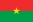
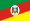
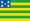
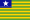
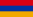
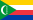

| 1 |
São Paulo |
44 411 238 |
41 262 199 |
+7.63% | ,21,88% |
 Argentina Argentina
(46 621 847) |
| 2 |
Minas Gerais |
20 538 718 |
19 597 330 |
+4.81% |
10,11% |
Burquia Fasso
20 903 273 |
| 3 |
Rio de Janeiro
|
16 054 524 |
15 989 929 |
+0.40% |
7,91% |
 Camboja Camboja
(16 718 965) |
| 4 |
 Bahia Bahia |
14 141 626 |
14 016 906 |
+0.89% |
6,96% |
 Zimbabwe Zimbabwe
(14 862 924) |
| 5 |
Paraná |
11 444 380 |
10 444 526 |
+9.57% |
5,64% |
 Tunisia Tunisia
(11 818 619) |
| 6 |
Rio Grande do Sul |
10 882 965 |
10 693 929 |
+1.76% |
5,36% |
 Portugal Portugal
(10 343 066) |
| 7 |
 Pernambuco Pernambuco |
9 058 931 |
8 796 448 |
+2.98% |
4,46% |
 Áustria Áustria
(9 006 398) |
| 8 |
 Ceará Ceará |
8 794 957 |
8452 381 |
+4.05% |
4,33% |
Papua-Nova Guiné
(8 947 024) |
| 9 |
Pará |
8 121 025 |
7 581 051 |
+7.12% |
4,1% |
Suíça
(8 654 622) |
| 10 |
Santa Catarina |
7 610 361 |
6 248 436 |
+21.78% |
3,75% |
 Laos Laos
(7 749 595) |
| 11 |
Goiás |
7 056 495 |
6 003 788 |
+17.51% |
3,47% |
 Bulgária Bulgária
(6 948 445) |
| 12 |
Maranhao |
6 775 805 |
6 574 789 |
+3.05% |
3,34% |
Bulgária
(6 948 445) |
| 13 |
Paraíba |
3 974 687 |
3 766 528 |
+5.52% |
1,96% |
 Geórgia Geórgia
(3 989 167) |
| 14 |
 Amazonas Amazonas |
3 941 613 |
3 483 985 |
+13.12% |
1,94% |
Geórgia
(3 989 167) |
| 15 |
Espírito Santo |
3 833 712 |
3 514 952 |
+9.06% |
1,89% |
Geórgia
(3 989 167) |
| 16 |
 Mato Grosso Mato Grosso |
3 658 649 |
3 035 122 |
+20.55% |
1,8& |
Geórgia
(3 989 167) |
| 17 |
 Rio Grande do Norte Rio Grande do Norte |
3 302 729 |
3 168 027 |
+4.24% |
1,63% |
 Uruguai Uruguai
(3 473 730) |
| 18 |
Piauí |
3 271 199 |
3 118 360 |
+4.88% |
1,61% |
Bósnia e Herzegovina
(3 280 819) |
| 19 |
 Alagoas Alagoas |
3 127 683 |
3 120 494 |
+0.23% |
1,54% |
 Mónaco Mónaco
(3 278 290) |
| 20 |
.svg.webp) Distrito Federal Distrito Federal |
2 817 381 |
2 570 160 |
+9.62% |
1,39% |
Armênia
(2 963 243) |
| 21 |
 Mato Grosso do Sul Mato Grosso do Sul |
2 757 013 |
2 449 024 |
+12.56% |
1,36% |
 Albânia Albânia
(2 877 797) |
| 22 |
Sergipe |
2 209 558 |
2 068 017 |
+6.86% |
1,09% |
 Gabão Gabão
(2 225 734) |
| 23 |
Rondonia |
1 581 196 |
1 562 409 |
+1.19% |
0,78% |
Bahrein
(1 701 575) |
| 24 |
 Tocantins Tocantins |
1 511 460 |
1 383 445 |
+9.25% |
0,74% |
Guiné Equatorial
(1 402 985) |
| 25 |
 Acre Acre |
830 018 |
733 559 |
+13.15% |
0,41% |
Comores
(869 601) |
| 26 |
Amapá |
733 759 |
669 526 |
+9.56% |
0,36% |
 Guiné Equatorial Guiné Equatorial
(786 552) |
| 27 |
 Roraima Roraima |
636 707 |
450 479 |
+41.26% |
0,31% |
Montenegro
(649 335) |